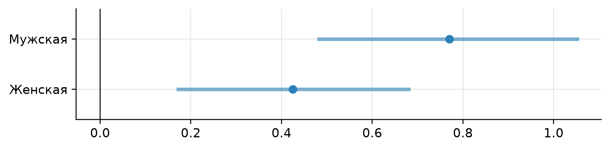

| Версия | Метрика | Эффект | ДИ 95% | К контролю | p (Холм) |
|---|---|---|---|---|---|
| мужская | Визиты, п.п. | 7,66 | 7,00 … 8,32 | +72% | < 0,001 |
| мужская | Покупки, п.п. | 0,68 | 0,50 … 0,86 | +119% | < 0,001 |
| мужская | Выручка на клиента, $ | 0,77 | 0,49 … 1,05 | +118% | < 0,001 |
| женская | Визиты, п.п. | 4,52 | 3,89 … 5,16 | +43% | < 0,001 |
| женская | Покупки, п.п. | 0,31 | 0,15 … 0,47 | +54% | < 0,001 |
| женская | Выручка на клиента, $ | 0,42 | 0,17 … 0,68 | +65% | 0,001 |
A/B-тест email-рассылки: какое письмо отправлять и кому
Анализ рандомизированного эксперимента на 64 000 клиентах интернет-магазина: дизайн теста, проверка SRM, эффект на визиты, покупки и выручку, бутстрап, CUPED, сегменты и рекомендация в деньгах.
Вопрос. Интернет-магазин разослал два варианта письма — с мужскими и с женскими товарами — и оставил треть клиентов без письма. Стоит ли рассылка денег, какую версию отправлять и кому?
Ответ. Отправлять мужскую версию всем. За две недели она добавляет $0,77 выручки на клиента (ДИ 95%: 0,48–1,05, +118% к контролю) — это ≈ $77 тыс. на 100 тыс. писем. Женская версия даёт меньше ($0,42) и не работает на клиентах, которые покупают только мужские товары, а мужская работает во всех сегментах.
Данные и дизайн
Открытый датасет MineThatData (Kevin Hillstrom, 2008): 64 000 клиентов, покупавших в последние 12 месяцев, случайно разделены на три равные группы. Отклик — визит на сайт, покупка и сумма покупки за две недели после письма.
| Группа | Клиентов | Визиты | Покупки | Выручка на клиента, $ |
|---|---|---|---|---|
| Без письма (контроль) | 21 306 | 10,6% | 0,57% | 0,65 |
| Мужская версия | 21 307 | 18,3% | 1,25% | 1,42 |
| Женская версия | 21 387 | 15,1% | 0,88% | 1,08 |
Проверки до анализа результатов:
- Деление на группы честное (SRM). χ² = 0,20, p = 0,90 — фактическое деление не отличается от задуманного 1 : 1 : 1, рандомизации можно доверять.
- Чувствительность теста (MDE). При 21 306 клиентах в группе, α = 5% и мощности 80% тест замечает рост доли визитов от 0,85 п.п. и доли покупок от 0,22 п.п. Покупает меньше 1% клиентов, поэтому по конверсии тест на грани чувствительности, а по визитам — с запасом.
Результаты
Каждая версия сравнивается с контролем по трём метрикам — это шесть проверок, поэтому p-value скорректированы поправкой Холма.
Обе версии значимо лучше, чем отсутствие письма, по всем трём метрикам; мужская — в 1,7–1,8 раза сильнее женской.
Код
fig, ax = plt.subplots(figsize=(7, 1.8))
for i, (lab, b) in enumerate([("Женская", boot_w), ("Мужская", boot_m)]):
ax.plot([b[1], b[2]], [i, i], lw=3, c="#2c7fb8", alpha=.6)
ax.plot(b[0], i, "o", c="#2c7fb8")
ax.axvline(0, c="k", lw=.8)
ax.set_yticks([0, 1], ["Женская", "Мужская"]); ax.set_ylim(-.6, 1.6)
plt.tight_layout()
Выручка: почему бутстрап
Выручку принесли только 0,9% клиентов, остальные — нули. При таком распределении t-тест опирается на асимптотику, поэтому интервал перепроверен бутстрапом (10 000 повторов): для мужской версии 0,48–1,05 против 0,49–1,05 по t-тесту. Интервалы совпадают — выборка достаточно большая, и вывод от метода не зависит.
CUPED: когда снижение дисперсии не работает
CUPED уменьшает шум метрики за счёт данных о клиенте до теста. Единственная такая переменная здесь — сумма покупок за прошлый год (history), но её корреляция с выручкой в тесте всего 0,022, и дисперсия снизилась лишь на 0,05%. Вывод для практики: CUPED полезен, когда есть та же метрика за период до теста (выручка за прошлые две недели), а годовая сумма покупок для этого не годится.
Кому какое письмо
| Версия | Покупал раньше | Клиентов | Эффект | ДИ 95% | p (Холм) |
|---|---|---|---|---|---|
| мужская | мужское и женское | 4 330 | 1,82 | 0,49 … 3,16 | 0,007 |
| мужская | только женское | 19 087 | 0,62 | 0,27 … 0,96 | 0,001 |
| мужская | только мужское | 19 196 | 0,68 | 0,25 … 1,12 | 0,004 |
| женская | мужское и женское | 4 267 | 0,16 | −0,81 … 1,14 | 0,745 |
| женская | только женское | 19 166 | 0,63 | 0,30 … 0,97 | < 0,001 |
| женская | только мужское | 19 260 | 0,28 | −0,12 … 0,68 | 0,349 |
Мужская версия поднимает выручку во всех трёх сегментах, сильнее всего — у тех, кто покупал и мужское, и женское. Женская версия не даёт значимого эффекта у тех, кто покупал только мужские товары (+0,28, p = 0,349). Поэтому отдельная таргетированная рассылка не нужна: мужская версия не хуже женской ни в одном сегменте.
Рекомендация
- Отправлять мужскую версию всей базе. Ожидаемый прирост — ≈ $77 тыс. выручки на 100 тыс. писем за две недели (ДИ: $48–105 тыс.).
- Порог окупаемости. Стоимость рассылки в данных не указана. Письмо окупается, если его стоимость меньше маржи с $0,77 выручки: при марже 30% — меньше $0,23 на письмо. Для email это выполняется с большим запасом.
- Следующий тест — на клиентах, покупающих и мужское, и женское: у них самый сильный отклик, но сегмент маленький (4 330 клиентов в двух группах), и интервал широкий.
Ограничения
- Данные 2008 года, один эксперимент, отклик измерен за две недели: долгосрочный эффект (отписки, «выжигание» базы) не виден.
- В выручке нет возвратов и маржи; порог окупаемости — допущение, а не расчёт.
- Сегментный анализ — разведочный: тест не планировался под сравнение сегментов, поэтому его выводы стоит подтверждать отдельным экспериментом.
Код
Функции анализа — в src/abtest/, тесты — в tests/: размер выборки и MDE сверены со statsmodels, бутстрап — с t-интервалом, CUPED и поправка Холма — на синтетических данных. Как воспроизвести — в README.